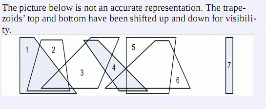

第一行一个整数N，表示梯形的个数。接下来的N行每行四个整数ai,bi,ci和di。任意两个梯形都没有公共顶点。
平面上有两条水平直线。现在有一些梯形，其两个顶点都落在上面的直线，另外两个顶点则位于下面的直线（见下图）。ai,bi,ci和di分别表示第i个梯形的左上顶点、右上顶点，左下顶点和右下顶点。若这些梯形的一个子集S中任意两个梯形均不相交，则S被视为是“独立”的。求最大独立集的元素个数（“最大”的意思是元素最多）和不同最大独立集的个数。个数对30013取模。
第一行一个整数N，表示梯形的个数。接下来的N行每行四个整数ai,bi,ci和di。任意两个梯形都没有公共顶点。
一行用空格分开的两个整数。第一个是最大独立集的元素个数，第二个是不同最大独立集的个数模上30013。
数据规模
1 ≤ N ≤ 100 000
1 ≤ ai, bi, ci, di ≤ 1 000 000 00
如果只有第一个整数是正确的，你将会得到该测试点40%的分数。
40% 的数据有 N ≤ 5000
样例解释
下图并不是样例的精确表示，梯形的上边和下边分别被下移和上移以便于观察。
7
1 3 1 9
4 7 2 8
11 15 4 12
10 12 15 19
16 23 16 22
20 22 13 25
30 31 30 31
3 8